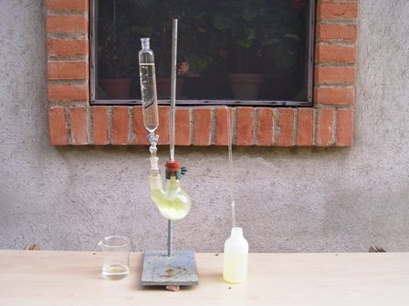
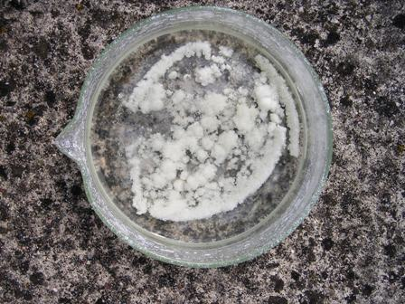

La sintesi di oggi è una sintesi decisamente estiva, quando lavorare all'aperto, magari nella frescura di un bell'albero ombroso, è una soddisfazione che rende ancora più piacevole il lavoretto che si va a fare... tanto più perchè oggi SI DEVE lavorare all'aperto!
Il motivo è che uno dei protagonisti della nostra commediola odierna è il cloro, ed il cloro è un elemento molto cattivo, che non sta volentieri in una stanza in compagnia di qualcuno che debba respirare...
Per compensare la sua cattiveria, ha anche delle buone proprietà: per mezzo di lui è possibile ossidare suo fratello iodio alla massima valenza e passare dallo ione iodato (V) a periodato (VII), cioè da -IO3 a -IO4; ho provato con successo un metodo classico ed è quello che vado a descrivere.
Materiali occorrenti:
- Potassio iodato KIO3
- Acido tricloroisocianurico C3O3N3Cl3
- Acido cloridrico
- Potassio idrossido
Sono partito dai 14 g di KIO3 ottenuti per elettrolisi e purificazione come descritto in un post precedente.
-Sciogliere lo iodato in 150 ml di acqua tiepida, aggiungere 15 g di KOH e porre la soluzione in un recipiente alto e stretto (ideale un cilindro graduato); pesare ora tutto il sistema.
 LA SUCCESSIVA OPERAZIONE VA TASSATIVAMENTE ESEGUITA ALL'APERTO, come si diceva all'inizio.
LA SUCCESSIVA OPERAZIONE VA TASSATIVAMENTE ESEGUITA ALL'APERTO, come si diceva all'inizio.
In un pallone a doppio collo da 250 ml mettere 15 g di TCCA acido tricloroisocianurico ed in un imbuto gocciolatore porre 80 ml di HCl al 15%; far gocciolare molto lentamente l'acido nel TCCA in modo da avere un flusso regolare di cloro, che viene fatto gorgogliare (tre/quattro bolle al secondo) con un opportuno tubo in vetro sagomato sul fondo del recipiente con la soluzione di iodato.
Continuare con il cloro fino ad esaurire il TCCA e poi ripesare la soluzione: se l'interfaccia liquido/gas era corretta si deve aver avuto un aumento di peso di circa 6 g; in caso contrario continuare.
E' avvenuta la seguente reazione:
3 KIO3 + 6KOH + 2 Cl2 --> K4I2O9 + 4 KCl + 3 H2O

Il K4I2O9 rimane nella soluzione fortemente alcalina.
Aggiungere ora lentamente HCl a media concentrazione fino a rendere la soluzione decisamente acida e concentrare per ebollizione eliminando circa 1/3 dell'acqua. Lasciar riposare una notte al fresco: cominceranno a formarsi dei cristalli di KIO4 che per ulteriore riposo e concentrazione (magari al sole, visto che è estate...) si depositeranno quasi quantitativamente.
K4I2O9 + 2 HCl --> 2 KIO4 + 2 KCl + H2O
Lavare opportunamente con acqua fredda e lasciar asciugare.
Il periodato si presenta sotto forma di bei cristalli bianchi/trasparenti molto pesanti (d.3,62); la solubilità è 8 g/l a 20°-
La resa finale da me ottenuta è stata di 13 g di KIO4 partendo da 14 g di KIO3, quindi circa dell'87%.

Ecco il risultato ottenuto.
E ora che ce ne facciamo del KIO4? Questa è proprio LA domanda da NON fare ad un chimico sperimentale! Per gli usi basta la soddisfazione di averlo fatto.